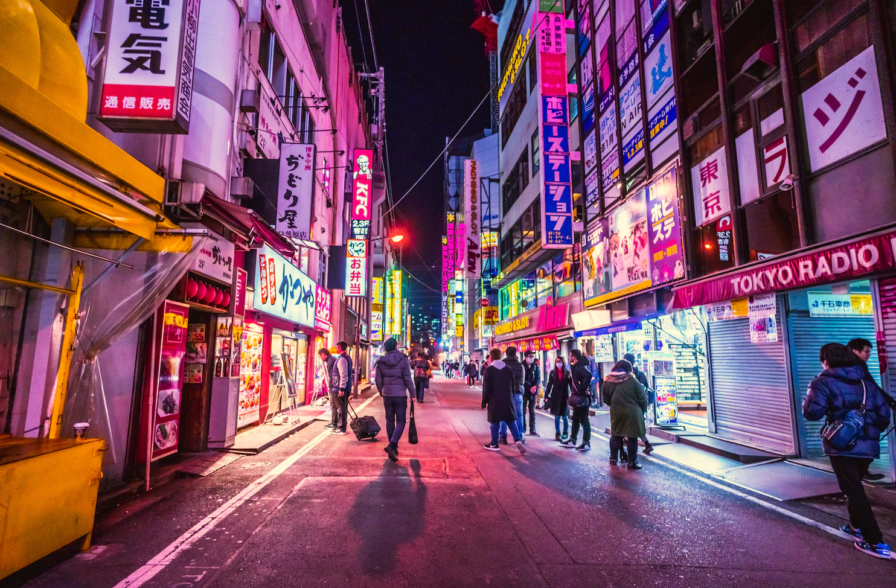
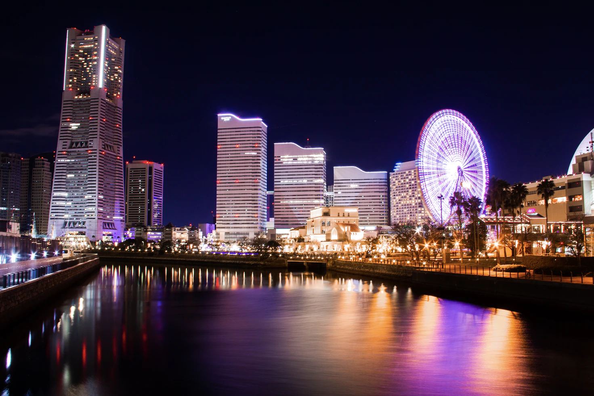
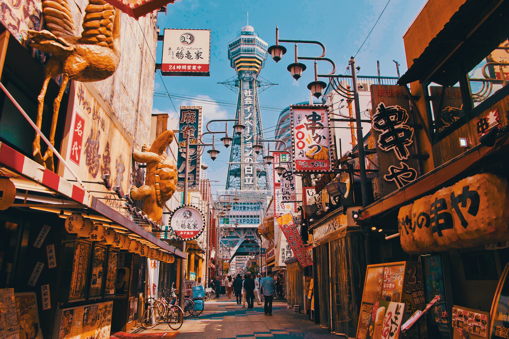
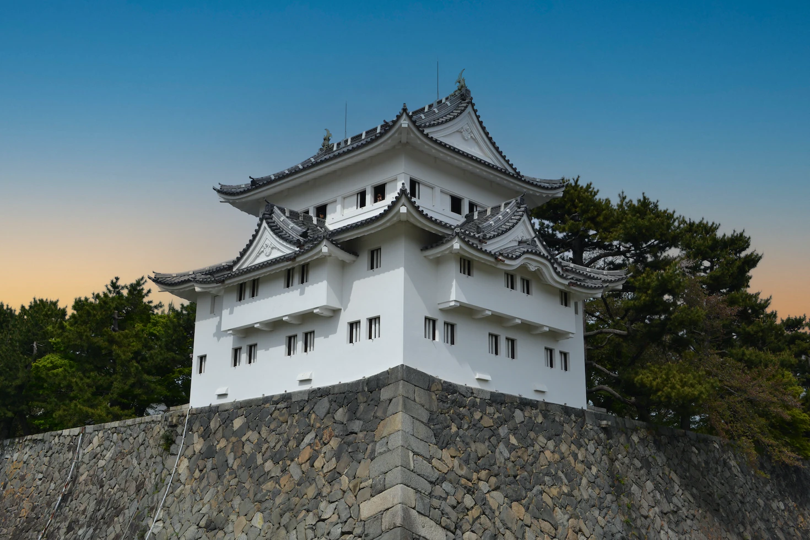
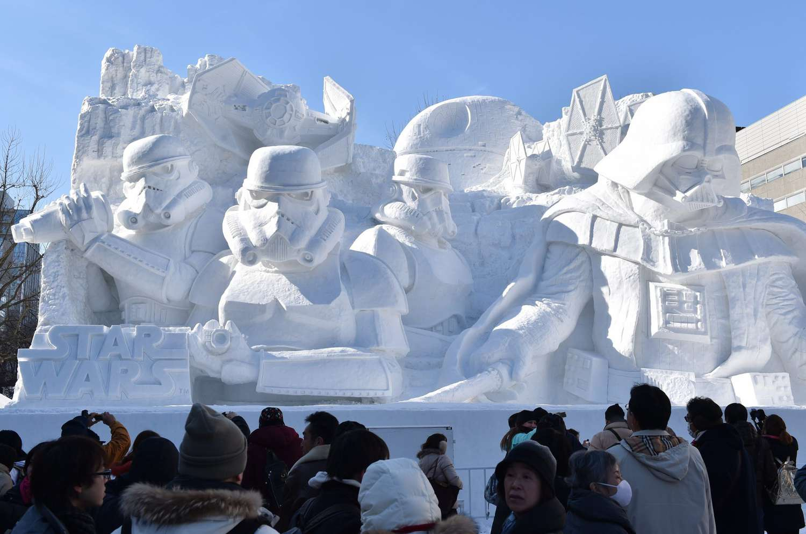
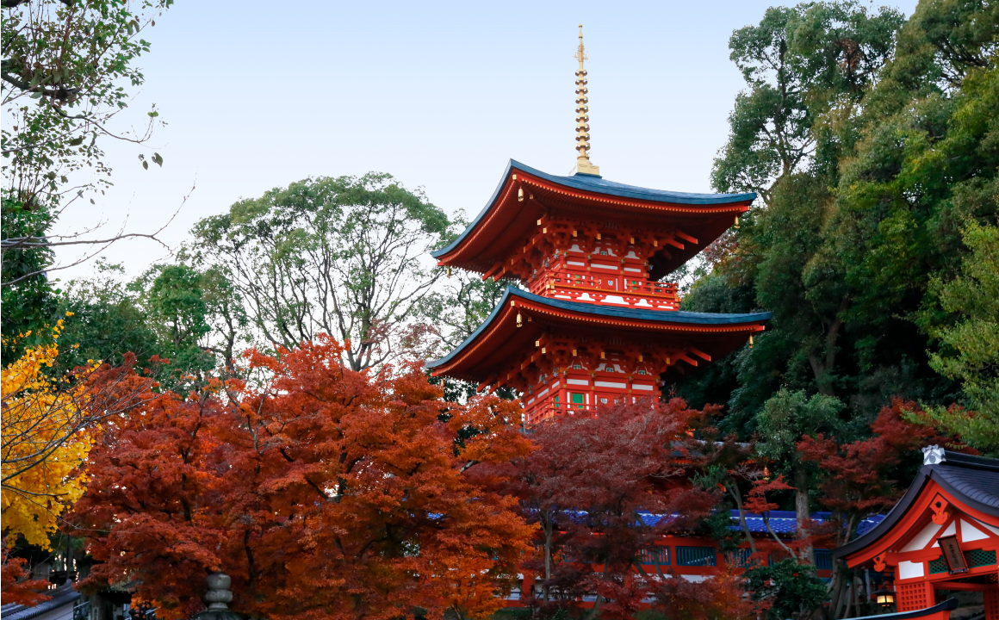

Destinos Populares






Kobe
Paisagem montanhosa, rica história marítima, gastronomia requintada e famoso bife de Kobe
Saiba MaisTabela de Preços
| Cidade | Preço | Duração |
|---|---|---|
| Tóquio | R$ 1000 | 7 dias |
| Yokohama | R$ 1500 | 10 dias |
| Osaka | R$ 1500 | 10 dias |
| Nagoya | R$ 1500 | 10 dias |
| Sapporo | R$ 1500 | 10 dias |
| Kobe | R$ 1500 | 10 dias |